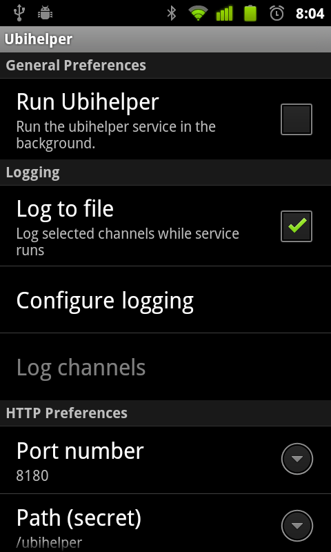
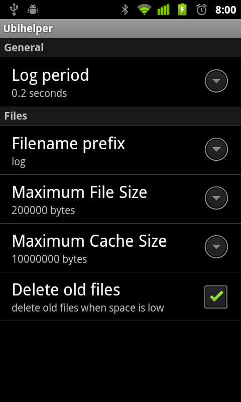
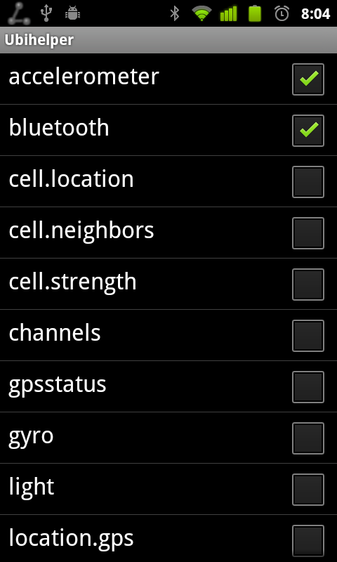

{kind=link}
{kind=link}

Chris Greenhalgh, 2012-03-09. Version 1.2 (updated 2012-03-12).
For people who are developing (e.g.) AppFurnace applications using ubihelper.
See UbihelperEndUserGuide.html for details on installing and starting/stopping the ubihelper application and service.
Contents:
Ubihelper allows applications running on the phone - such as AppFurnace applications - to access additional sensor information, such as Bluetooth discovery, wifi networks, etc. A future version will also allow access to sensor information from other phones over the network.
You don't necessarily need to understand the details in this guide; as a starting point you may be able to copy fragments of Javascript code and adapt from there.
To use ubihelper with AppFurnace you must:
The current version of the standard code is: appfurnace_simple.js
In this code:
Without modification the provided javascript will monitor the "time" channel (the current system time) and show it as the text of a label or rich text widget called "output".
A version of this application is available as a AppFurnace PIRL: http://the.appfurnace.com/test/IQbjX/ or QR-Code. Android AppFurnace player is available from the market: https://market.android.com/details?id=com.calvium.player or QR-Code
The information that the ubihelper service can provide is organised as a set of "channels". Each channel has a name and one or more values. Depending on what the channel represents the value may be constant or may change over time (e.g. a sequence of readings from a sensor).
Sensor channels will have a minimum period between new values (e.g. 1 second for GPS, 1-2 seconds for a Wifi scan, about 12 seconds for a Bluetooth scan). But your application can request updates at another rate.
The type of value returned by a channel depends on the channel, i.e. different channel may return completely different kinds of values.
The available channels may vary from device to device. If a channel does not exist on a particular device then no values will be returned from it. Some of the standard channel names are:
From the ubihelper preferences screen, the option menu "Channels" gives a list of known channels, which may be viewed (the default update period for these views is 0.25 seconds, i.e. 4Hz):
For example, the "accelerometer" channel:
Some other sample values are given below.
Ubihelper includes a simple HTTP (web) server, which other applications use to get information from the ubihelper service.
The port that the server runs on defaults to "8080", and can be configured in the ubihelper preferences:
When requesting informatioon from the ubihelper server a specific URL path must also be used. By default this is "/ubihelper", but this can also be changed in the ubihelper preferences.
Note that if you change the HTTP server path then any users of you application will need to configure the same path before running your application.
The ubihelper HTTP server expects to receive a POST to the URL http://localhost:<port>/<path> (by default http://localhost:8180/ubihelper). The body of this post should be a JSON(UTF-8 encoded) array of objects, with the following properties:
For example, to request updates every half second from the accelerometer, waiting up to 20 seconds for the application to collect the data, and keeping only the most recent value, the application would POST:
The server returns a JSON array of objects with the following properties:
The value(s) returned are channel-dependent (see below). For example, the above request might return:
Note: most channels only start to collect information when the first request is made by the application. The application should then wait approximately the requested period and then poll the ubihelper server to retrieve any available values.
From the main preferences view, the option menu "Test" opens a simple test view which till post a request to the local server and print the response, e.g. (after pressing "Test Http" a couple of times on a real device):
At present the ubihelper application can be run in an Android emulator, but will not return any sensor values.
Using the provided client code in AppFurnace (see above), when the AppFurnace application is previewed in the web editor it will open an additional window which you can use to pass sensor values to the running application in order to simulate sensor input:

See the next section for information on logging values from real device(s) for use with the emulator.
(From version 1.1, 2012-03-21)
The main preferences includes the option to log sensor values to file (on the device's SDCard).

The "Configure Logging" options opens the main log configuration options:

Currently this allows you to specify:
The "Channels" option allows you to choose which sensor channels to log. Note: this view only shows channels when the ubihelper service is actually running!

The log data can be downloaded from the phone via the USB connection. The log files are stored by default in the directory /Android/data/uk.ac.horizon.ubihelper/files/logs/
Below are some values from a log file, which show the format(s) of the respective channels.
Note: gyro and compass are similar.
{
"value":{
"timestamp":53804449,
"accuracy":3,
"values":[-0.5746083855628967,5.841852188110352,7.833827972412109]
},
"time":1332345357576,
"name":"accelerometer"
}
{
"value":{
"devices":[
{
"bond":10,
"btclass":1084,
"name":"DTVBluetooth",
"btaddress":"E4:E0:C5:E0:1C:AC"
},
{"bond":12,"btclass":260,"name":"axcmini","btaddress":"00:26:B0:F7:A5:70"},
{"bond":10,"btclass":524,"name":"Galaxy Nexus","btaddress":"BC:B1:F3:7D:4A:75"}
],
"time":1332345415715
},
"time":1332345415719,
"name":"bluetooth"
}
{
"value":{
"type":"gsm",
"timestamp":1332345421317,
"cid":61723379,
"lac":215
},
"time":1332345421318,
"name":"cell.location"
}
{
"value":{
"timeToFirstFix":0,
"timestamp":1332345417008,
"maxSatellites":255,
"satellites":[
{"snr":15,"prn":5,"azimuth":184,"used":false,"elevation":28},
{"snr":22,"prn":9,"azimuth":246,"used":false,"elevation":18},
{"snr":20,"prn":15,"azimuth":290,"used":false,"elevation":52},
{"snr":25,"prn":18,"azimuth":315,"used":false,"elevation":21},
{"snr":18,"prn":21,"azimuth":292,"used":false,"elevation":13},
{"snr":26,"prn":27,"azimuth":248,"used":false,"elevation":43}
],
"status":4
},
"time":1332345417012,
"name":"gpsstatus"
}
{
"value":{
"timestamp":1332345421184,
"provider":"gps",
"lon":-1.1879963576391386,
"time":1332431819160,
"accuracy":35,
"altitude":53,
"lat":52.95323877913924
},
"time":1332345421186,
"name":"location.gps"
}
{
"value":{
"networks":[
{
"address":"00:17:0e:86:03:86",
"level":-67,
"capabilities":"[WPA2-EAP-CCMP]",
"name":"eduroam"
},
{"address":"00:17:0e:86:02:c2","level":-95,"capabilities":"[WPA2-EAP-CCMP]","name":"eduroam"},
{"address":"00:17:0e:86:03:82","level":-62,"capabilities":"[WEP]","name":"CSiTwep"},
{"address":"00:17:0e:86:03:83","level":-65,"capabilities":"[WEP]","name":"MRL"},
{"address":"00:17:0e:86:03:80","level":-66,"capabilities":"[WEP]","name":"CSiT28"},
{"address":"00:17:0e:86:03:81","level":-70,"capabilities":"[WEP]","name":"CSiTrobots"},
{"address":"00:17:0e:86:10:f2","level":-94,"capabilities":"[WEP]","name":"CSiTwep"},
{"address":"00:17:0e:86:10:f1","level":-94,"capabilities":"[WEP]","name":"CSiTrobots"},
{"address":"00:17:0e:86:10:f0","level":-98,"capabilities":"[WEP]","name":"CSiT28"},
{"address":"00:17:0e:86:03:84","level":-65,"capabilities":"","name":"UoN-guest"}
],
"time":1332345416938
},
"time":1332345416991,
"name":"wifi"
}